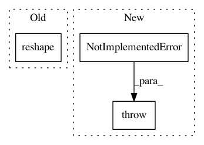

275281de4d9214895413dd11f01839555dc04b6b,pyntcloud/structures/voxelgrid.py,VoxelGrid,get_feature_vector,#VoxelGrid#Any#,123
Before Change
axis = {"x_mean": 0, "y_mean": 1, "z_mean": 2}
s = np.zeros(self.n_voxels)
c = np.zeros(self.n_voxels)
return (np.nan_to_num(groupby_sum(self.points, self.voxel_n, axis[mode], s) /
groupby_count(self.points, self.voxel_n, c))).reshape(self.x_y_z)
def get_voxel_neighbors(self, voxel):
Get valid, non-empty 26 neighbors of voxel.
After Change
vector = np.nan_to_num(voxel_sum / voxel_count)
else:
raise NotImplementedError("{} is not a supported feature vector mode".format(mode))
return vector.reshape(self.x_y_z)
def get_voxel_neighbors(self, voxel):
In pattern: SUPERPATTERN
Frequency: 3
Non-data size: 3
Instances
Project Name: daavoo/pyntcloud
Commit Name: 275281de4d9214895413dd11f01839555dc04b6b
Time: 2018-06-23
Author: daviddelaiglesiacastro@gmail.com
File Name: pyntcloud/structures/voxelgrid.py
Class Name: VoxelGrid
Method Name: get_feature_vector
Project Name: snorkel-team/snorkel
Commit Name: b56a4b355dfc302fa449d223e065af3a7acac986
Time: 2018-05-03
Author: dnicholson329@gmail.com
File Name: snorkel/learning/pytorch/noise_aware_model.py
Class Name: TorchNoiseAwareModel
Method Name: marginals
Project Name: rail-berkeley/softlearning
Commit Name: 6aa2cf60e7b62c83548a27c80a1f34e38160e0e1
Time: 2018-10-28
Author: hartikainen@berkeley.edu
File Name: softlearning/algorithms/sac.py
Class Name: SAC
Method Name: _init_actor_update